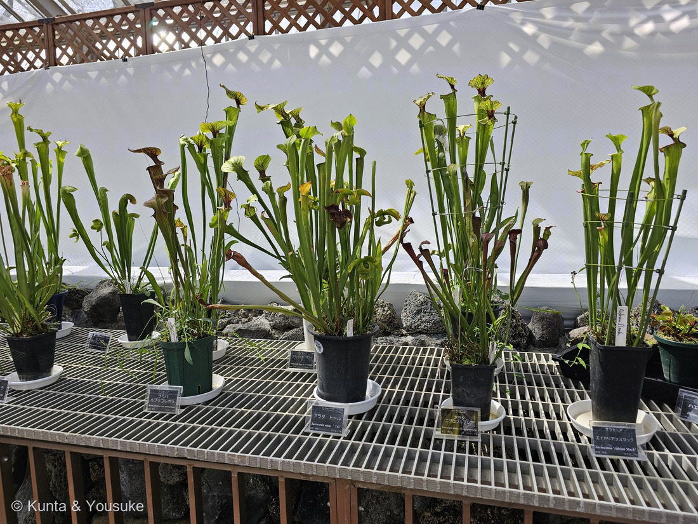
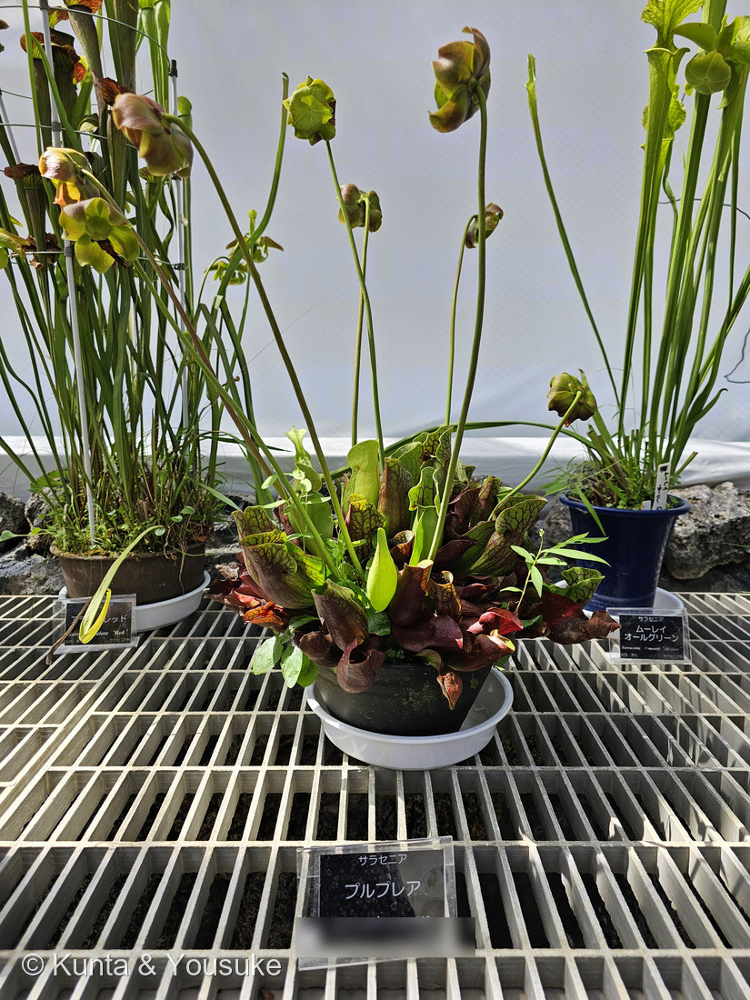
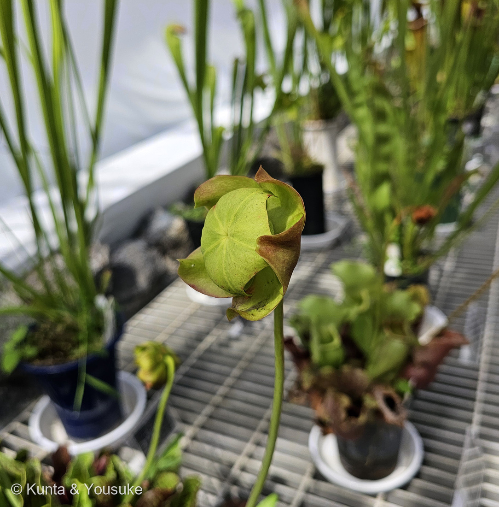
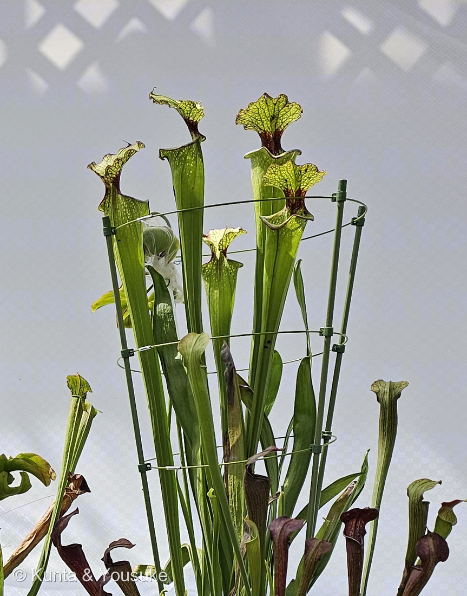
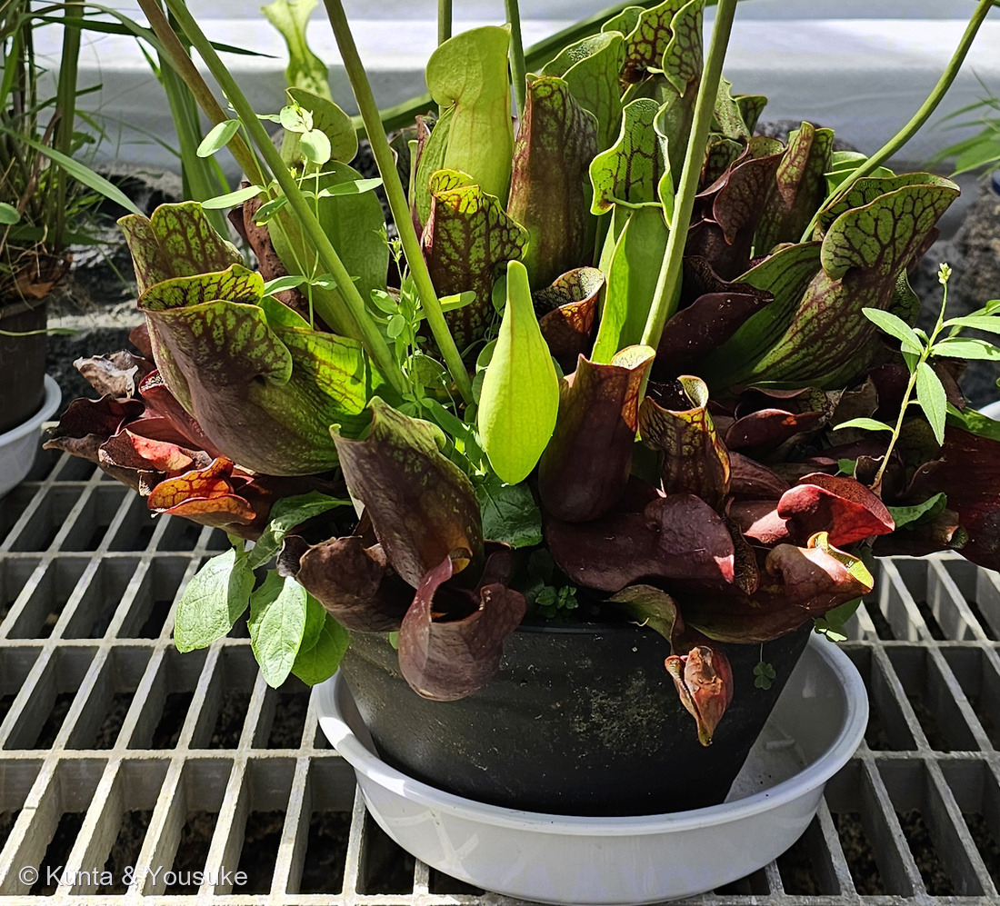

地図を読み込んでいるよ…
🔍 写真も地図も、押しているあいだ拡大して見られるよ（スマホは指を置いてすこし待ってね）。
🌍 の地図＝この子がもともと自生している場所を緑に。北アメリカの東側。アメリカ東海岸からテキサス、五大湖のあたり、そしてカナダ南東部まで。⭐ほとんどの種はアメリカ南東部だけにいて、寒い温帯まで北へ広がっているのはプルプレア（Sarracenia purpurea）ひとりだけ。⚠アメリカ南東部では、この子たちの湿地の97.5%がもう失われたと見積もられている。
⭐ふるさとは北アメリカの東側だよ。英語版Wikipediaは「Indigenous to the eastern seaboard of the United States, Texas, the Great Lakes area and southeastern Canada（アメリカ東海岸、テキサス、五大湖のあたり、そしてカナダ南東部が原産）」と書いている。⭐⭐ただし、ほとんどの種は「アメリカ南東部」だけの子——そこから北のカナダまで広がっているのは、写真②⑤のプルプレア（Sarracenia purpurea）ひとりだけ（同「only S. purpurea occurs in cold-temperate regions」）。⭐だからこの地図の緑は、実際よりずいぶん広いよ——アメリカもカナダも国ぜんぶが塗られてしまうけれど、ほんとうは東の湿地にかたまっている。⚠⚠そしてその湿地が、いま消えかけている＝「Estimates indicated that 97.5% of Sarracenia habitat has already been destroyed in the southeastern U.S.（アメリカ南東部では、サラセニアの生育地の97.5%がすでに失われたと見積もられている）」（同）。⭐⭐お店や温室ではあんなにたくさん会えるのに、野原ではほとんどいない——218 キンシャチと同じ形の話だね。⭐同じ食虫植物の142 ハエトリソウも、すぐとなりのノースカロライナ／サウスカロライナの子＝⭐⭐北アメリカ東部は、食虫植物の一大産地なんだ。⚠いっぽう217 ウツボカズラは、地球の反対側の東南アジア。
⚠ 地図は国（日本と中国だけ県・省）までしか塗れないから、ほんとうの分布より広く見えていることがあるよ。地図はだいたいの場所。正確なところは、上の文を見てね。
サラセニア
Sarracenia spp.（サラセニア属）
別名 ヘイシソウ（瓶子草）／英名 Trumpet Pitcher · North American Pitcher Plant
サラセニア科 · Sarraceniaceae（サラセニア属）── 図鑑ではじめてのサラセニア科＝88科目。147 サクラソウ・064 カキと同じツツジ目 Ericales
燻太さんの一言「食虫植物のサラセニアだよ。ここの展示は期間限定みたい。同好会の人たちが丹精込めて育て上げた子達だから、名札に名前が乗っているね。虫取り用の葉も気になるけど、果実？のような構造がどうなっているのかも気になるね」── その「果実？」、じつは果実じゃなかったんだ
⭐⭐⭐ 名前と学名の由来 ── 二人の人の名前が、この棚にいる
- ⭐⭐⭐属名 Sarracenia は、人の名前。——ミシェル・サラザン（Michel Sarrazin, 1659–1734）。「a surgeon, physician, scientist and naturalist from New France（ニューフランスの外科医・医師・科学者・博物学者）」（英語版Wikipedia）。⭐リンネがその人にちなんで属名をつけた（同「Linnaeus would name the genus Sarracenia in his honor」）。
- ⭐⭐サラザンは、パリでトゥルヌフォールに植物学を教わった人だった。——そして17世紀の終わりに、カナダから生きたプルプレアの株を、そのトゥルヌフォールに送った（英語版Wikipedia「sent live specimens of S. purpurea to the Parisian botanist Joseph Pitton de Tournefort, who thereupon described the species」）。⭐先生に、自分の見つけた不思議な草を送ったんだね。
- ⭐和名は「ヘイシソウ（瓶子草）」。——「葉が筒になっているのを酒器の瓶子（へいし）に見立てたものである」（日本語版Wikipedia）。⭐⭐217 ウツボカズラの「靫（矢を入れる筒）」に続いて、また入れ物の名前。⭐英語では pitcher（水差し）だから、東も西も「何かを入れる器」に見えたんだね。
- ⭐⭐⭐もう一人、この棚に人の名前がいた。——名札の「エイドリアンスラック」＝Sarracenia 'Adrian Slack'。アドリアン・スラックは、食虫植物の栽培を切りひらいたイギリスの人（2018年に亡くなった）。⭐モウセンゴケの Drosera slackii にも、その名が残っている。
- ⭐種小名は、そのまま体の説明になっている。——purpurea＝紫／flava＝黄／alata＝翼のある／leucophylla＝白い葉／⭐oreophila＝「山を好む」（ギリシャ語 oros＝山＋philos＝好む）／var. rubricorpora＝赤い体／var. nigropurpurea＝黒紫。
この植物のこと ── 88科目・3人目の食虫植物
- サラセニア科サラセニア属の食虫植物。⭐図鑑ではじめてのサラセニア科＝88科目だよ。⚠種の数は出典で少しちがう＝日本語版Wikipediaは「約8種が知られている」、英語版Wikipediaは「8 to 11 species」。
- ⭐⭐⭐図鑑では142 ハエトリソウ・217 ウツボカズラに続く3人目の食虫植物。——⭐⭐⭐そして、142に書いた三つ組の最後の一人＝「モウセンゴケ（粘着式）／ウツボカズラ（落とし穴式の袋）／サラセニア（筒式）」。⭐217のおまけにも書いた。その本人が、やっと来たよ。
- ⭐⭐⭐⭐でも、この子だけ大きな枝がちがう。——ハエトリソウ（モウセンゴケ科）とウツボカズラ（ウツボカズラ科）は、どちらもナデシコ目。⭐サラセニアはツツジ目（Ericales）で、147 サクラソウや064 カキと同じ大きなまとまり。⭐⭐つまり「落とし穴の罠」は、遠くはなれた枝でべつべつに思いつかれたんだ。
- ⭐ふるさとは北アメリカの東側（英語版Wikipedia「Indigenous to the eastern seaboard of the United States, Texas, the Great Lakes area and southeastern Canada」）。⭐寒いところまで行けるのはプルプレアだけ（同「only S. purpurea occurs in cold-temperate regions」）。
- ⚠⚠住むところが、ものすごく減っている。——「Estimates indicated that 97.5% of Sarracenia habitat has already been destroyed in the southeastern U.S.（アメリカ南東部では、サラセニアの生育地の97.5%がすでに失われたと見積もられている）」（英語版Wikipedia）。⭐3つの種はアメリカの法律で「Federally Endangered」に指定されていて、そのひとつが S. oreophila＝⭐⭐名札の「フラバ×オレオフィラ」の、片方の親だよ。
⭐⭐⭐ 同定について ── 属で止めた。でも名札は9つ読めた
⭐⭐ これは4つめの「属のページ」（209 ベゴニア・215 オオオニバス・216 スイレンに続く）。同好会の方たちが持ちよったコレクションで、一株ずつ品種がちがうから、一人に決めると残りの写真が使えなくなる。⭐だから部屋ごと建てたよ。
- 名札で読めた名前（9つ） ── フラバ ルブリコルポラ（S. flava var. rubricorpora）／アラタ トール（S. alata 'Tall'）／アラタ ニグロプルプレア（S. alata var. nigropurpurea）／アラタ レッド（S. alata 'Red'）／エイドリアンスラック（S. 'Adrian Slack'）／フラバ×オレオフィラ（S. flava × oreophila）／プルプレア（S. purpurea）／ムーレイ オールグリーン（S. × moorei 'All Green'）／ミノール（S. minor・別の棚）。
- ⭐⭐株と結びつけたのは2人だけ。——②⑤の、まん中で低く広がっている赤紫の株＝プルプレア。⭐名札がその鉢のすぐ前にあって、しかも出典の特徴とぴったり合う（あとの節）。④の、赤い葉脈と白い窓のある背の高い袋＝エイドリアンスラック。⭐これも名札が鉢のすぐ前で、出典の言う「leucophylla ゆずりの白い窓と、flava ゆずりの濃い赤の葉脈」と合っている。
- ⚠ほかの株は決めていない。——216で「名札のとなりの花＝その品種、とはかぎらない」と、はっきり矛盾する例を見たから。⭐「決めない」と「何も言わない」はちがう、というのは215で決めたとおりだよ。
- ⭐⭐おもしろいことに気づいた。——「ムーレイ」（S. × moorei）は S. flava × S. leucophylla の交配（英語版Wikipedia「Sarracenia × moorei = S. flava × S. leucophylla」）。⭐⭐そして「エイドリアンスラック」も、flava と leucophylla の子（Carnivorous Plant Resource「a superior clone of natural hybrid between Sarracenia flava and S. leucophylla」）。⭐⭐⭐同じ両親から、かたや「オールグリーン（緑ばかり）」、かたや「赤い葉脈と白い窓」。⭐同じ組み合わせでも、出てくる子はぜんぜんちがうんだね。
- ⚠名札の綴りをひとつだけ直しておく。——名札は「Sarracenia flava × oreophylla」だったけれど、この種の正しい綴りは Sarracenia oreophila（ギリシャ語 oros＋philos）。⭐読み方の「オレオフィラ」は、そのままで合っているよ。
⭐⭐⭐⭐ 「果実？のような構造」の正体 ── あれは、逆さにひらいた傘
⭐⭐⭐ 燻太さんの「果実？のような構造がどうなっているのかも気になるね」。——⭐答えは、果実ではなくて、花。⭐⭐正確には「花びらの落ちた花」で、まん中の緑のまるいものは逆さにひらいた傘のかたちの花柱だよ。
- ⭐⭐⭐日本語版Wikipediaの説明が、写真そのままなんだ。——「雌蘂の先端は大きく五つに分かれ、先端は大きく反り返るが、実際にはその間に水掻きのように組織がつながっているので、その形は五本の骨を持った雨傘のようなものである」。⭐写真③をよく見て。緑のドームに骨が5本、まん中から放射状に走って、ふちで5つの先が外へ反り返っているでしょう。
- ⭐⭐英語版Wikipediaはこう書いている。——「five sepals superintended by three bracts, numerous anthers, and an umbrella-like five-pointed style, over which five long yellow or red petals dangle（萼片5枚と3枚の苞、たくさんの葯、そして傘のような五つ先の花柱。その上から、長い黄色か赤の花びらが5枚たれ下がる）」。⭐写真③のうしろでひらひらしている茶色っぽいものが萼片で、花びらはもう落ちている（⚠ここはぼくの読みだよ）。
- ⭐⭐⭐どうして逆さの傘になるのか。——1908年の観察記録（Entomological News「Pitcher plants III」）がこう書いている＝「the stem bends just below the bud, making a complete turn, so that when the flower opens, the style occupies the position of an inverted umbrella（つぼみのすぐ下で茎がくるりとひとまわりねじれ、花がひらくころには花柱が逆さの傘の位置に来る）」。⭐わざわざ、ねじれて下を向くんだ。
⭐⭐⭐⭐ その傘は、虫のための「一方通行の部屋」になっている。
- 柱頭（花粉を受けるところ）は「on little projecting points at the base of these clefts on the concave side of the open umbrella（ひらいた傘の内側、切れこみのつけ根にある小さな突起の上）」（同1908年）。
- 英語版Wikipediaはこう説明する＝「Bees searching for nectar must force their way past one of the stigmas to enter the chamber formed by the style. Inside, they will inevitably come in contact with a lot of pollen... Upon exiting, the bees must force their way under one of the flap-like petals. This keeps them away from the stigma, avoiding self-pollination.（蜜をさがすハチは、花柱がつくる部屋に入るために柱頭のひとつをこじあけて通らなければならない。中では、いやでもたくさんの花粉にふれる……出るときはひらひらした花びらの下をくぐる。だから柱頭にはふれない＝自家受粉が避けられる）」
- ⭐⭐⭐つまり入口と出口がちがう。——入るときだけ柱頭をこする＝そのとき体についている花粉は、よその花のものだけ。⭐出るときはもう、この花の花粉まみれ。だから出口では柱頭にふれさせない。⭐⭐この一本道のために、花はわざわざ逆さになっているんだ。
- ⭐⭐そしてもうひとつ、この花は袋よりずっと高いところに咲く。——写真②を見て。花茎だけが、筒の頭を追いこして長く伸びているでしょう。⭐⭐虫を食べる植物にとって、お客さん（送粉者）を自分で食べてしまうのはこまる。⭐花を高く掲げるのは、その取りちがえを避ける手のひとつだと考えられている（⚠この読み方は研究でも「かもしれない」の段階だよ）。
⭐ ほんとうの果実は、このあと。
- 「On average, 300–600 seeds are produced... Seed takes five months to mature, at which point the seed pod turns brown and splits open, scattering seed.（平均300〜600粒の種ができる……種は5か月かけて熟し、そのころさやは茶色くなって裂け、種をまき散らす）」（英語版Wikipedia）。
- ⭐⭐種のつくりが、湿地の子らしいんだ。——「1.5–2 mm in length and have a rough, waxy coat which makes it hydrophobic, possibly for seed dispersal by flowing water（1.5〜2mmで、ざらざらしたろうの殻が水をはじく。流れる水で運ばれるためかもしれない）」（同）。⭐水に浮いて、湿地を旅するんだね。
- ⚠だから8月8日のこの緑は、「まだ途中」。——春に咲いて5か月で茶色く裂けるなら、いま緑なのは熟していく最中（⚠これはぼくの読み）。⏳茶色く割れたところを見るのが、次の宿題だよ。
⭐⭐⭐ もうひとつの問い ── 「虫取り用の葉」は、季節で作りかえられる
⭐ 燻太さんの「虫取り用の葉も気になるけど」にも答えるね。
- ⭐⭐あの筒は、まるごと葉。——「The plant's leaves have evolved into a funnel or pitcher shape in order to trap insects.（この植物の葉は、虫をつかまえるために漏斗や水差しの形へ進化した）」（英語版Wikipedia）。⭐217のウツボカズラは「葉の先のつるの、そのまた先」が袋になるけれど、サラセニアは葉そのものが根もとから立ち上がって筒になる。⭐同じ落とし穴でも、作り方がちがうんだ。
- ⭐ふたの役目は二つ。——雨が入りすぎるのを防ぐことと、「serves to guide prey to the pitcher opening, using a combination of colors, scents, and downward-pointing hairs（色とにおいと下向きの毛を組み合わせて、獲物を筒の口へ導く）」（同）。⭐筒の内側はろうを塗ったようにすべり、下向きの毛が生えていて、落ちた虫は上がってこられない。
- ⭐⭐⭐でも、プルプレアだけはやり方がちがう。——この子の筒はずんぐりして横に寝ていて、ふたが口をふさがない。だから雨水がたまる（英語版Wikipedia・Sarracenia purpurea「filled with rainwater that traps prey」／「lack a waxy zone」）。⭐写真⑤を見て。赤紫の壺が台すれすれに寝そべって、うしろの大きなふたがうちわみたいに立っているでしょう。⭐⭐あれは口をふさぐためのふたじゃないんだ。
- ⭐⭐⭐⭐そしてその水たまりには、住人がいる。——カの Wyeomyia smithii とユスリカの Metriocnemus knabi が住みついていて、つかまった虫を消化するのを助けている（同）。⭐⭐虫を食べる植物の中に、食べられない虫が暮らしている。⭐しかも、その子たちが食事の手伝いをしているんだ。
⭐⭐⭐ もうひとつ、写真①④に大事なものが写っている。
- 筒にならない、平たくて剣のような葉がまじっているでしょう。⭐これは「phyllodia（偽葉）」と呼ばれる虫を捕らない葉だと思う（⚠ぼくの読み）。「Some Sarracenia will also produce flat, non-carnivorous leaves called phyllodia during autumn; these will often last throughout winter.（サラセニアの中には、秋に phyllodia と呼ばれる平たい虫を捕らない葉を出すものがある。冬じゅう残ることが多い）」（Tom's Carnivores）。⭐英語版Wikipediaも、S. flava は晩夏から秋にかけて虫を捕らない葉に切りかえると書いている。
- ⭐⭐⭐写真は8月8日＝晩夏。⭐つまり一つの株が、季節で「虫を捕る葉」と「捕らない葉」を作り分けているところを、そのまま見ているんだ。⭐⭐虫を捕るのは、あくまで足りない栄養を補うため。冬にそなえるときは、光合成だけの葉にもどる。
⭐⭐⭐ この棚は、期間限定だった ── 名札に人の名前が入っていた理由
⭐ 燻太さんの「ここの展示は期間限定みたい」は、そのとおりだった。
- 「世界の食虫植物展」——2026年7月18日（土）〜8月16日（日）／広島市植物公園 展示温室／「ハエトリグサやウツボカズラなど、世界の食虫植物を展示し、育て方等を紹介する。」／協力＝広島食虫植物同好会（園の案内より）。
- ⭐⭐⭐だから名札がこんなに細かいんだ。——名札の下の行には、その株を育てた方のお名前と「広島食虫植物同好会」が入っていた。⭐⭐園のコレクションの札じゃなくて、一人ひとりが持ちよった株の札。⭐燻太さんの言った「同好会の人たちが丹精込めて育て上げた子達」は、名札のとおりだったよ。
- ⚠個人のお名前は、ここには書かないでおくね。⭐写真②の名札のいちばん下の行はぼかしてある。⭐①では、公開しているサイズだと読めないことを4倍に拡大して確かめたよ。
- ⭐育て方のむずかしさも、名札の細かさとつながっている。——サラセニアは雨水か蒸留水で、鉢を2cmほどの水に立てて育てる。肥料はやらない。そして冬に寒い季節がないと弱ってしまう（Tom's Carnivores「All North American pitcher plants require a cold winter dormancy between November and February.」）。⭐「やせた湿地で暮らす」ことに、体ぜんぶを合わせてしまった子なんだね。
- ⏳同じ棚に、まだ図鑑に来ていない子がいた。——ムシトリスミレ（Pinguicula）＝粘着式の食虫植物。⭐142の三つ組でいう「モウセンゴケ（粘着式）」の、もう一つのやり方だよ。⭐紫の花も咲いていた。次に登録できるね。
参考：Wikipedia・サラセニア（葉が筒になっているのを酒器の瓶子（へいし）に見立てたものである／この植物の標本をヨーロッパへ送ったカナダ人の医者、ミシェル・サラザンにちなむものである／雌蘂の先端は大きく五つに分かれ、先端は大きく反り返るが、実際にはその間に水掻きのように組織がつながっているので、その形は五本の骨を持った雨傘のようなものである／葉が筒になってそこに虫を落とす、落とし穴式の捕虫器を持つ／分布域は北アメリカ東岸の亜熱帯域からカナダにわたる／約8種が知られている／通常は植木鉢に水苔で植え、休眠している冬でも腰水をして栽培する）／Wikipedia (English)・Sarracenia（The name Sarracenia was first employed by Michel Sarrazin, the Father of Canadian Botany who in the late 17th century sent live specimens of S. purpurea to the Parisian botanist Joseph Pitton de Tournefort／Indigenous to the eastern seaboard of the United States, Texas, the Great Lakes area and southeastern Canada／only S. purpurea occurs in cold-temperate regions／8 to 11 species／five sepals superintended by three bracts, numerous anthers, and an umbrella-like five-pointed style, over which five long yellow or red petals dangle／Bees searching for nectar must force their way past one of the stigmas to enter the chamber formed by the style／Upon exiting, the bees must force their way under one of the flap-like petals. This keeps them away from the stigma, avoiding self-pollination／On average, 300–600 seeds are produced／Seed takes five months to mature, at which point the seed pod turns brown and splits open／1.5–2 mm in length and have a rough, waxy coat which makes it hydrophobic, possibly for seed dispersal by flowing water／The plant's leaves have evolved into a funnel or pitcher shape in order to trap insects／serves to guide prey to the pitcher opening, using a combination of colors, scents, and downward-pointing hairs／Sarracenia × moorei = S. flava × S. leucophylla／Estimates indicated that 97.5% of Sarracenia habitat has already been destroyed in the southeastern U.S.／Federally Endangered: S. rubra subsp. alabamensis, S. rubra subsp. jonesii, S. oreophila）／Wikipedia (English)・Sarracenia purpurea（squat pitchers held horizontally, filled with rainwater that traps prey／lack a waxy zone／the mosquito Wyeomyia smithii and the midge Metriocnemus knabi／the only member of the genus that inhabits cold temperate climates／floral emblem of the Canadian province of Newfoundland and Labrador since 1954）／Wikipedia (English)・Sarracenia oreophila（green pitcherplant／"mountain-loving" from oros and philos／Critically Endangered (IUCN), Endangered under the U.S. Endangered Species Act／about 34 naturally occurring populations remain）／Wikipedia (English)・Michel Sarrazin（5 September 1659 – 8 September 1734, was a surgeon, physician, scientist and naturalist from New France／he met and studied under Joseph Pitton de Tournefort／Linnaeus would name the genus Sarracenia in his honor）／Harvard Forest・Pollination in Sarracenia（Pitcher plants III, Entomological News, April 1908。the stem bends just below the bud, making a complete turn, so that when the flower opens, the style occupies the position of an inverted umbrella／on little projecting points at the base of these clefts on the concave side of the open umbrella／scrapes its back across the projecting point of the stigma）／Tom's Carnivores・How to Grow Pitcher Plants（Some Sarracenia will also produce flat, non-carnivorous leaves called phyllodia during autumn; these will often last throughout winter／All North American pitcher plants require a cold winter dormancy between November and February／Sarracenia require rainwater, distilled water, or deionised water／stand your plants' pots in about 2cm of water）／Carnivorous Plant Resource・Sarracenia 'Adrian Slack'（registered as an official cultivar on March 28th, 2000／a superior clone of natural hybrid between Sarracenia flava and S. leucophylla／inherited its fenestration after S. leucophylla and deep red veins after S. flava／Adrian Slack ... has written two books about carnivorous plant cultivation／He passed away in 2018）／Wikipedia (English)・Darlingtonia californica（the sole species in its genus, family Sarraceniaceae／In 1853, it was described by John Torrey, naming the genus Darlingtonia after Philadelphian botanist William Darlington (1782–1863)／native to Northern California and southwest Oregon／a forked leaf ... that resemble fangs or a serpent's tongue／multiple translucent false exits）／⭐広島市植物公園「世界の食虫植物展」（2026年7月18日〜8月16日・展示温室・協力 広島食虫植物同好会）と、会場の名札（⚠掲示物と名札の写真は公開せず、出典として引くだけにしてある）